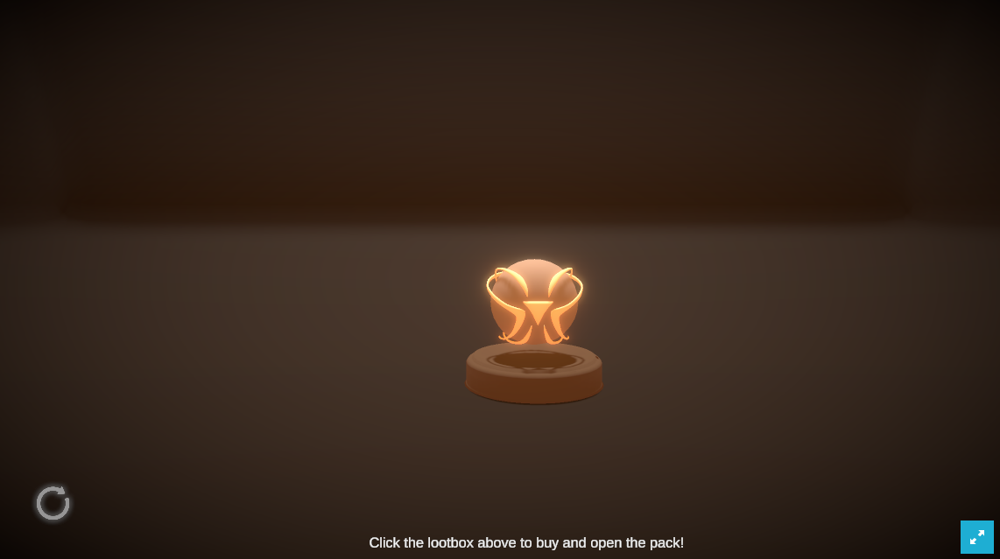

Introduction
The purpose of this project is to create a pickaxe-shaped controller using Huzzah32 ESP32, BNO055 components that can be used to play a blockchain game in Unity. The project also aims to explore the differences between traditional mining and cryptocurrency mining.
Concept and Background Research
Traditionally, mining was a physically demanding job that involved extracting resources from the earth, such as coal or gold. This type of mining required a significant amount of manual labor, as well as specialized equipment.
Cryptocurrency mining, on the other hand, involves using computer power to solve complex mathematical problems in order to validate transactions on a blockchain network. This type of mining does not require physical labor, but rather relies on the computational power of machines.
The shift towards cryptocurrency mining has had significant implications for human life, as it has led to change the concept of traditional mining and being a new industry that has same name as the mining. The concept of mining is succeeded but physical mining isn’t.
Before starting the project, I researched how Unity games based on blockchain games are structured and looked for ways to machine-learn game controllers.
Technical Implementation

First, I drew for controller’s design sketch which feels like sci-fi and retro vibe. I referred some game pickaxes from Fortnite and Gundam to has the vibes. And build it with Esp32, BNO055, SSD1306.
The first method chosen for machine learning using the games esp32 and bno055 was a Unity package called “interactML” developed by Goldsmith students. However, the developed package was a package that could not be used in WebGL, and a blockchain-based game had no choice but to build with WebGL to connect to a virtual currency wallet, so another method was chosen.
The method I chose was a platform called Edge Impulse. Edge Impulse is a platform that uses AI to train users' models, reduce the probability of failure, and help them deploy in various forms.
Arduino code was written to train the controller. This code uses BNO055 to extract Orientation, Gyro, and Acceleration values and transmit them to laptop through Bluetooth serial communication.
Now, open the manager, check if the name of the controller you created, the extracted value and the number match, and specify what number each number means. Connect the controller created through this process to Edge Impulse and use the AI Web Machine Learning Platform provided by Edge Impulse.

The controller can be machine-learned as desired by the user, and I learned the controller for both the left and right hands by following the motions of the miners' pickaxe. After motion recording, the data is displayed as a graph. The left side is recorded with the left hand, and the right side is recorded with the right hand.
After this process, more possibilities are trained through AI machine learning, the margin of error is reduced, and complete machine learning data comes out. Edge Impulse distributes this data in various ways, and I distributed it as an Arduino library so that it can be used in Arduino.
After that, I made a Unity game that can be used in conjunction with the controller. Before the start of the game, the player interlocked with his virtual currency wallet, started the game, and measured the number of mouse clicks for 1 minute to create a format in which he could claim coins. You can play with a mouse by setting the value that comes out as a mouse click by the machine learning controller, but if you use a controller, fewer clicks will come out.
Reflection and Future Development
The project was successful in creating a pickaxe-shaped controller that can be used to play a blockchain game in Unity. The project also provided insights into the impact of changes in industry on human physical labor and the concept of industry.
However, since this is the first time for everything, there were many regrettable parts. If you know how to handle machine learning data in more detail, you can create a more detailed controller. Also, Unity games were also difficult because it was the first time using C# script.
The plan is to hire a real miner, record his pickaxe motion, and machine-learn it so that the audience can get coins only by following his movements exactly. Unity games are also developed more and more, aiming to add interesting interactions.
*I DEACTIVATED CLAIM BUTTON IN GAME LINKED IN FINAL PROJECT LINK. AVOID FOR UNNECESSARY TRANSACTION*
References
- Technical Reference https://docs.edgeimpulse.com/docs/development-platforms/officially-supported-mcu-targets/espressif-esp32
- Technical Reference https://portal.thirdweb.com/unity/getting-started
- Conceptual Reference Brynjolfsson, E., & McAfee, A. (2014). The second machine age: Work, progress, and prosperity in a time of brilliant technologies. WW Norton & Company.